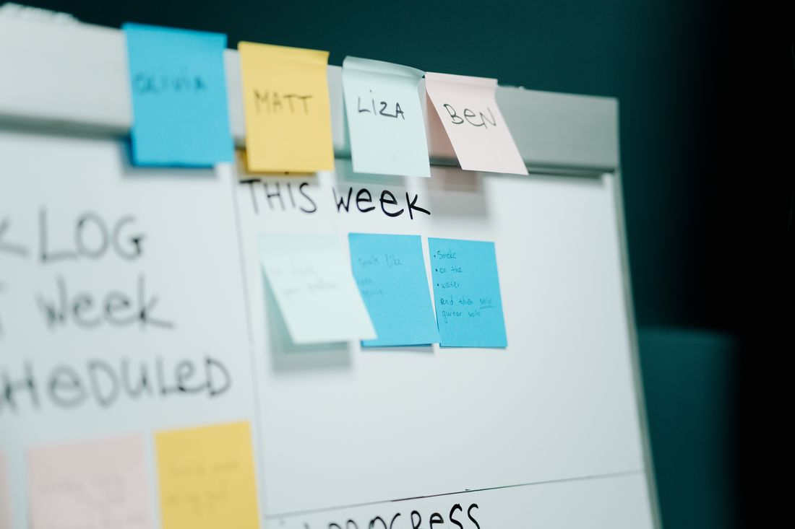
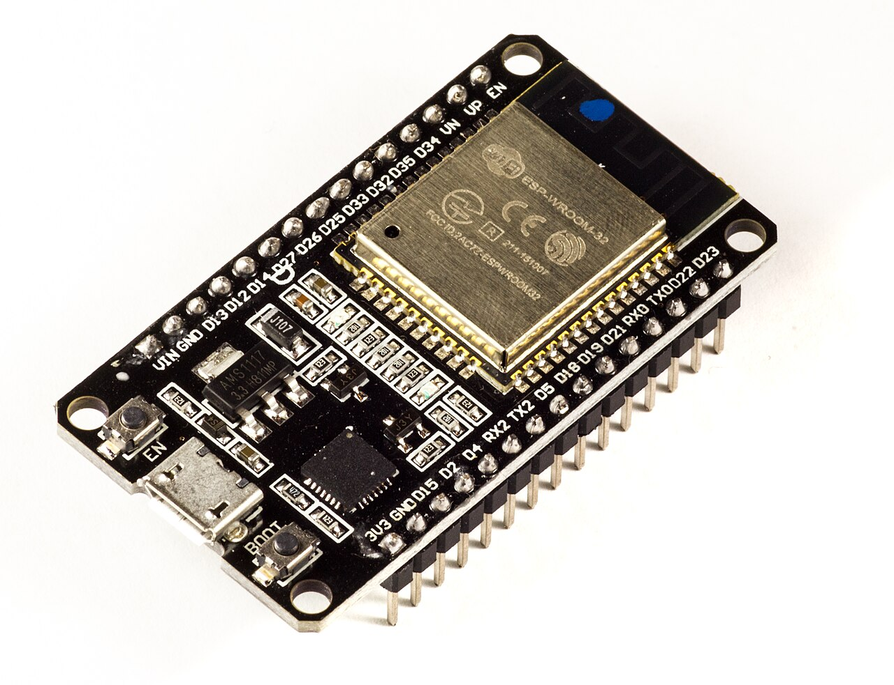

ComLab
Best Use of Snowflake API at Hacks for Hackers Hackathon by MLH. An AI platform that streamlines feedback by converting user tickets into actionable insights through automated triaging and summarization.
Software projects and my ECE Discovery Project.

A clock can tell me the time, but getting ready for the day also means checking the weather, deciding what to wear, and keeping track of alarms. My Discovery Project brings those tasks into one device: a Wi-Fi connected smart alarm clock built around an ESP32. I want it to combine an OLED display, a buzzer, and an LED with indoor sensing and online weather information.
The OLED screen will display the time and date, the current alarm or stopwatch status, outdoor weather, indoor temperature and humidity, and a recommendation for what to wear. The outdoor information I want to include covers temperature, humidity, rain, and wind. The goal is to make the device useful as a quick reference while still allowing more detailed control through a web interface.
I plan to develop the device in stages. First, I will establish a working connection between the ESP32 and OLED display and get the time and date onto the screen. Then I will add the DHT11 temperature and humidity sensor so that the device can report indoor conditions. Keeping these steps separate should make it easier to check the wiring and identify which part needs attention if something does not behave as expected.
Next, I will connect the device to Wi-Fi and retrieve outdoor weather through an API. The display will bring the indoor and outdoor information together, and I will add a graphical clothing recommendation based on the weather. I will need to decide how often to refresh the data and how to show that information is unavailable or out of date. Those details are part of making the display understandable.
The alarm function will use a buzzer and a flashing LED. I want to be able to create and configure alarms rather than fixing one alarm time in the program. A button will be part of the hardware controls, and I plan to add a web interface for alarms and display settings. My longer-term aim is to use an interface on my personal website to control the device; the connection between that interface and the ESP32 still needs to be designed and tested.
My approximate parts list includes an ESP development board, OLED display, DHT11 sensor, RGB LED, active or passive buzzer, button, breadboard, jumper wires, resistors, and a USB-C cable. I have purchased the development kit linked below. I also plan to use The Hive and consult an ESP32 web-server tutorial and the ESP32 documentation while building the project. The exact parts and implementation may change as I test the design.
I will consider the project complete when the device displays the time and date, shows outdoor weather from an API, measures indoor temperature and humidity, and provides a graphical suggestion for what to wear. It should allow alarms to be created or configured and activate both the buzzer and flashing LED when an alarm occurs. The web interface should let me control alarms and other settings.
These are intended outcomes, not completed results. My testing will need to check each feature individually and then check how the complete device behaves together. I will record whether display updates interfere with alarm timing, whether settings take effect correctly, and what happens if the Wi-Fi connection or weather API is unavailable. I will add actual observations and any remaining limitations after testing.
This project gives me a way to connect software engineering with embedded hardware. It involves a user interface, external data, device state, and physical outputs in the same system. My next step is to assemble a small working version and confirm the display and sensor connections before adding more features. As the build develops, I will document my decisions, add an original photo or video, and replace this planning section with a reflection on what actually worked and what I would change.

Best Use of Snowflake API at Hacks for Hackers Hackathon by MLH. An AI platform that streamlines feedback by converting user tickets into actionable insights through automated triaging and summarization.
A low-latency pairwise voting engine using FastAPI, Redis leaderboards, and asynchronous batch persistence to PostgreSQL.
Create picturebooks using an interactive editor. Get access to AI image generation features to aid in the storytelling process.
Create, run, and visualize different logic circuits in an interactive environment.
Create celestial bodies. Simulate simple Newtonian physics in space.
A simple app for creating, editing, and deleting todos.
A list of miscellaneous things.